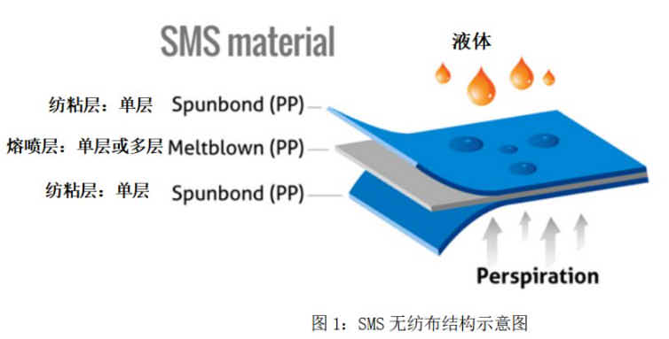

熔喷布，俗称口罩的“心脏”，是口罩中间的过滤层，能过滤细菌，阻止病菌传播。熔喷布是一种以高熔融指数的聚丙烯为材料，由许多纵横交错的纤维以随机方向层叠而成的膜，纤维直径范围 0.5~10 微米，其纤维直径大约有头发丝的三十分之一。
口罩结构
剪开一个已经使用过的医用口罩，你会发现：口罩有三层，（内层）吸湿层、（中层）核心过滤层、和（外层）阻水层。内外层都是无纺布，内层是普通无纺布，外层表面做了防水处理，隔绝液体。中间的经过驻极处理的熔喷布，可以过滤掉大部分病毒。

熔喷布原理
1、熔喷布形成交织的纤维层（如下图），能过滤细菌，阻止病菌传播。病毒虽小，但大部分病毒无法独立存在，其传播途径主要是由分泌物或打喷嚏时的飞沫，组成的小团体（约5微米）
2、熔喷布本质上是一种纤维过滤器，含有病毒的飞沫靠近熔喷布后，也会被静电吸附在表面，无法透过。
熔喷工艺
口罩的熔喷布层和无纺布层尽管原料都是聚丙烯专用树脂，但熔喷布专用料与其他无纺布原料在生产工艺和性能上存在很大差异。
熔喷布专用料：就是高熔融指数的聚丙烯。聚丙烯熔融指数越高，熔喷出的纤维就越细，制成的熔喷布过滤性也越好。
在口罩和熔喷无纺布生产过程中，最不可或缺的核心部件是熔喷非织造布模头。其工作原理为：
聚丙烯PP专用料经塑化后进入熔喷模头流道，经分配均匀后再进入喷丝板，高温高速高压热气流喷射出来形成了熔喷非织造布。
顾名思义，熔喷布是“喷”出来的。采用高速热空气流对模头喷丝孔挤出的聚合物熔体细流进行牵伸，由此形成超细纤维并收集在凝网帘或滚筒上，同时自身粘合而成。
熔喷应用
除口罩外，熔喷工艺还应用于：
- 过滤材料：水过滤、贵金属回收过滤、油漆及涂料等化学产品过滤、室内空调机过滤、气水分离过滤、净化室过滤；
- 医用材料：外科手术衣、手术室帷帘及消毒包扎布
- 卫生材料：卫生巾、成人尿片
- 吸油材料：熔喷布塞入一根由PET长丝针织而成的网眼长管中作为海上阻油、吸油的浮动水栅
- 服装材料：超细纤维构成的空气保暖结构、工业用途的保护服
- 擦布：利用PP天然的吸油性